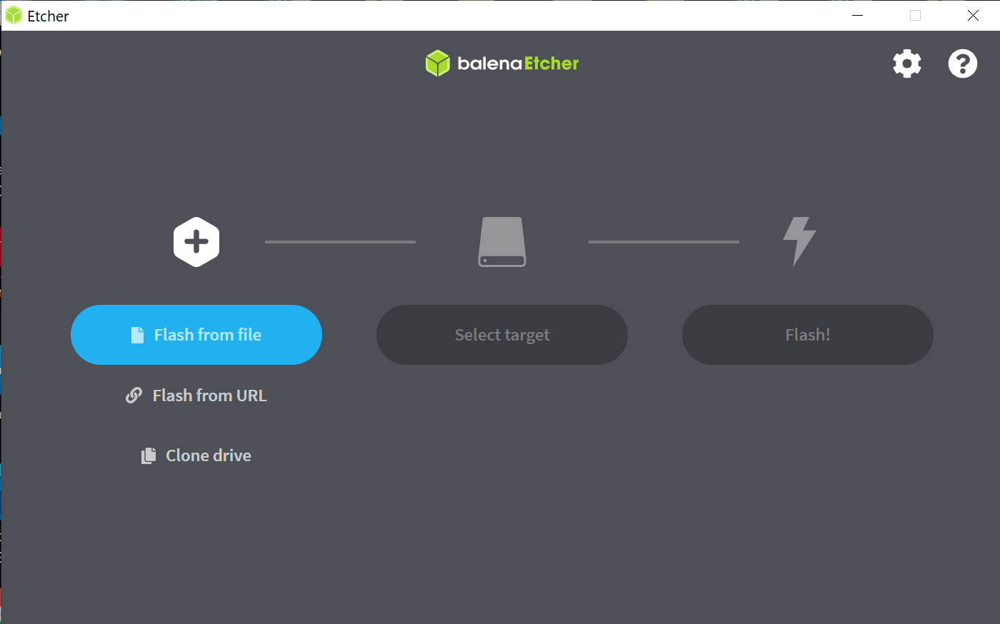

Niko
Nyman Raportti
Haaga-Helia University of Applied Sciences 21.1.2022
ICT4TN021-3018
H1(a)
Tehtävänäni oli asentaa Linux käyttöjärjestelmä joko virtuaalikoneelle tai suoraan koneen rautaan. Päätin asentaa Linuxin vanhan koneeni Windowsin tilalle. Tietokoneena käytin Huawei Matebook AMD Ryzen 5 prosessorilla ja vanhana käyttöjärjestelmänä Windows 10. Uudeksi käyttöjärjestelmäksi valikoitui Kali Linux.
Käynnistyslevyn luonti
Käynnistyslevyä varten minulla oli tyhjä SanDisk Cruzer Blade 8GB muistitikku.
Latasin käyttöjärjestelmätiedoston osoitteesta https://www.kali.org/get-kali/. Valitsin Bare Metal -vaihtoehdon ja sen alta 64-bit Installerin. Tiedosto oli 2.9Gt ja tiedoston lataamiseen meni 30–40 minuuttia. Käytössäni oli 10Mbs nopea taloyhtiön nettiliittymä. Latasin ja asensin myös BalenaEtcherin, joka on avoimen lähdekoodin ohjelma, jolla USB-muistitikku muutetaan ”käynnistyslevyksi”. Etcherin latasin osoitteesta https://www.balena.io/etcher/ ja valittavaksi tiedostoksi Etcher for Windows (x86|x64).
Seuraavaksi laitoin muistitikun koneen USB-porttiin ja käynnistin Etcherin. Etcher oli helppo ohjelma käyttää:
Valitsin ISO -tiedoston jonka olin ladannut aiemmin.
Valitsin muistitikun jonka olin kiinnittänyt koneeseen aiemmin
Klikkasin Flash! ja odotin, että ohjelma kertoi minulle tikun olevan valmis.

Käynnistyslevy oli valmis minuuteissa, jonka jälkeen irrotin muistitikun tietokoneesta.
Asennus
Sammutin Huawei kannettavani ja laitoin juuri luomani käynnistyslevykkeen USB-porttiin. Käynnistin koneen. Linuxin asennusohjelman sijaan latautui vanha Windows. Käynnistin tietokoneen uudestaan ja menin tarkistamaan BIOSin asetukset. BIOSiin pääsin painamalla ESC näppäintä koneen käynnistyksen jälkeen. Näppäin vaihtelee eri tietokoneissa.
BIOSissa navigoin itseni nuolinäppäimiä käyttäen kohtaan Bootable device, jonka alla oli listattuna laitteet. Vaihdoin <Enable> muistitikkuni kohdalle ja muihin <Disable>. Seuraavaksi siirryin Security Setting alle ja vaihdoin Secure Boot <Disable>. Koneen käynnistyttyä uudestaan latautui myös Kali Linuxin asennustiedosto.
Asennuksen eri vaiheissa noudatin https://www.kali.org/docs/installation/hard-disk-install/ löytyviä ohjeita. Valitsin seuraavasti:
Boot: Graphical install
Language: English
Location: Fin
Keyboard layout: Finnish
Hostname: kali
Domain name: jätin tämän tyhjäksi
Nimitiedot: oma nimi, käyttäjänimi ja salasana
Kellon asetukset
Partition disks: Guided – use entire disk and set up encrypted LVM
Partition disks: valitsin tietotokoneeni kovalevyn
Selected for partitioning: all files in one partition (recommended for new user)
Finish partitioning and write changes to disk
Write changes to disks?: Yes
Olin valinnut kryptauksen joten tässä vaiheessa kysyttiin vielä salasanaa
Configure the package manager, ”The proxy information should…”: jätin tyhjäksi
Software selection:
Xfce (Kali’s default desktop environment)
Collections of tools [selecting this item has no effect]
…top – the 10 most popular tools
…default – recommended tools (available in the live systems)
Install GRUB boot loader: valitsin mikä oli oletuksena /dev/sda
VALMIS
Yhteenveto
Asensin onnistuneesti Kali Linux käyttöjärjestelmän suoraan koneen rautaan. Työvaiheet olivat helppoja ja suoraviivaista, eikä ongelmia tullut vastaan. Asennuksen jälkeen pääsin kirjautumaan järjestelmään asennuksen yhteydessä luomillani tunnuksilla.